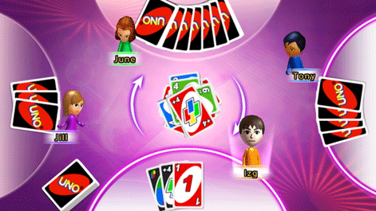

21 |
Summary of Play |
 |
|
Each player is dealt 7 cards and the remaining cards are placed face down in the center of the table to form the draw pile. The top card of the draw pile is turned over to begin the discard pile.
The first player selects a card from his or her hand by matching either the color, number or symbol (Draw Two, Reverse, Skip) of the top card on the discard pile. The first player’s card is placed on top of the discard pile and the next player has to match it. For example, after the deal a red three is turned up; the player to the left of the dealer may play any red card or match the number three with a number three card of another color. The player may also play a Wild card or Wild Draw Four card. In the event the first card turned up is an action card, play begins as follows: Wild Draw Four card This card is placed back in the deck and another card is drawn from the draw pile. Wild card The player to the left of the dealer calls the color then plays. Draw Two card The player to the left of the dealer must draw two cards and play passes to the next player. Reverse card The dealer plays first and play continues to the right. Skip card The player to the left of the dealer is “skipped” and the following player begins the play. A Wild or Wild Draw Four card will always be a playable card. If at any time a player does not have a playable card, he or she must draw a card from the draw pile which he or she may play if it matches and if the chosen rules allow it. If after drawing one card, he or she still cannot play, the turn passes to the next player. Special action cards add excitement to the game by reversing the direction of play, skipping the next player or instructing the next player to draw a certain number of additional cards. Since the cards are marked in such a way as to make them immediately understandable, only a few games will make almost anyone an expert player. As you learn to play and discover the possibilities and strategies with the various cards in the deck, the game will become increasingly exciting.  |
 |
 |
 |